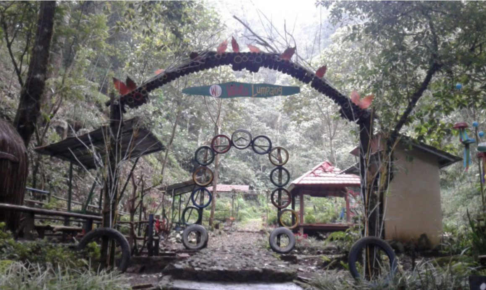
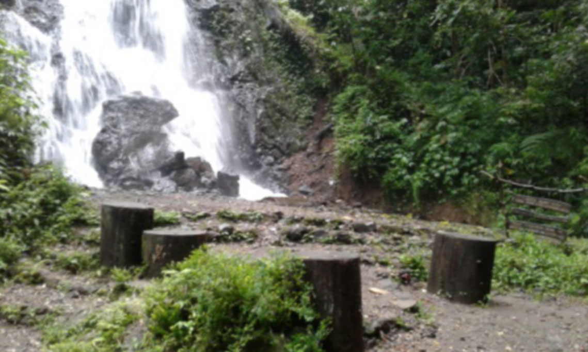
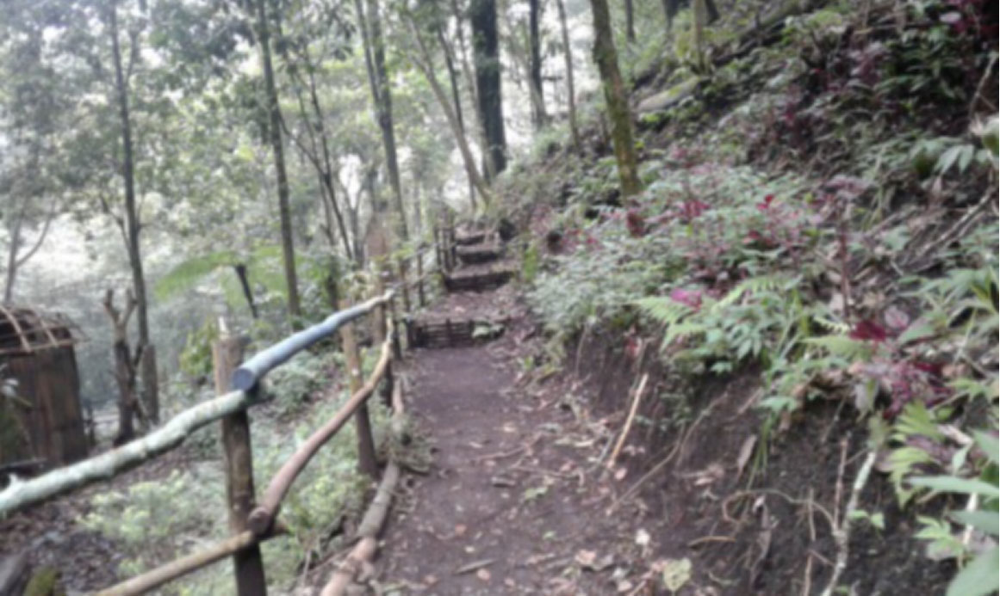
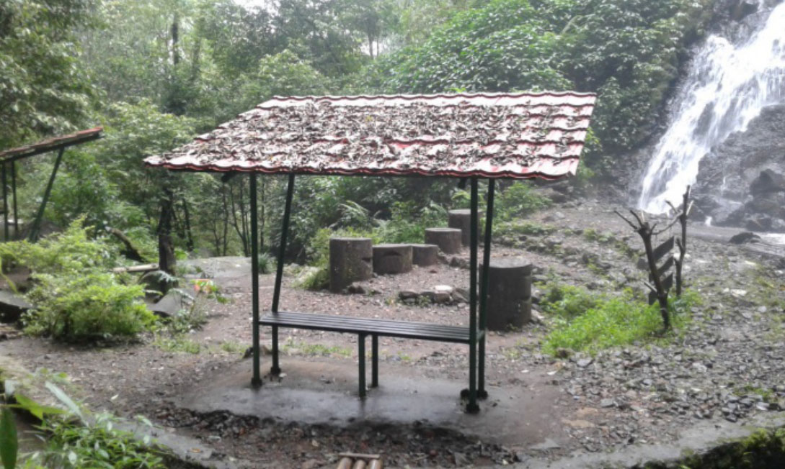

Air Terjun Watu Lumpang Merupakan air terjun yang cukup tinggi di Obyek Wisata Alah Taman Hutan Raya Raden Soerjo, yang secara administratif berada di Desa Sensi Kecamatan Pacet Kabupaten Mojokerto dan berada pada posisi 7° 43’ 41,967” – 7° 43’ 51,970 LS dan 112° 31’ 29,520” – 112° 31’ 42,353” BT. Menurut sejarah nih, pada lokasi air terjun itu pada jaman dahulu banyak batu yang seperti lumpang dan genting serta tempat pemukiman, namun seiring dengan perubahan waktu batu-batu itu hilang tertimbun tanah, ceatment area air terjun ini mengalir dari mata air Gunung Anjasmoro, Lokasi Air Terjun ada di ketinggian 1.750 mdpl.

Air terjun Watu Lumpang memiliki ketinggian ± 30 meter dan ± 20 meter dengan posisi kedua air terjun saling berhadapan berada di sebelah selatan dan utara tebing. Beberapa sarana yang telah di bangun di Blok Pemanfaatan Air terjun Watu Lumpang antara lain ; Loket Masuk, Toilet, Gazebo, Shelter, Tempat Parkir, dan Jalan Hutan/makadam. Untuk menuju lokasi Air Terjun Watu Lumpang dapat ditempuh dengan menggunakan kendaraan bermotor, baik roda dua maupun roda empat. Lokasi obyek wisata ini berada tepat di sebelah jalan aspal Pacet – Cangar. Jarak dari pacet ± 12 kilometer sedangkan dari arah Cangar ± 1,5 kilometer ditempuh dalam waktu ± 30 menit. Sedangkan akses ke air terjun dibangun jalan makadam selebar 1,5 meter dengan jarak 50 meter dari loket masuk.

Teman-teman yang ingin berlibur ke wisata air terjun watu lumpang, bisa menggunakan motor atau mobil. Lewat jalan raya pacet-batu, jalannya yang menanjak dan banyak belokan tajam namun sudah beraspal halus sehingga mudah dijangkau oleh pengunjung. Untuk tiketnya masuknya, teman-teman cuma butuh merogoh kocek sebesar Rp. 10.000 rupiah/orang. Nantinya di dalam lokasi wisata teman-teman diberikan fasilitas berupa Gasebo, Selter, Toilet, Tempat Parkir, Spot Foto dan Lokasi Air Terjun. Selain itu, teman-teman yang suka selfie, disediakan spot foto selfie pada lokasi air terjun dan pengunjung dapat menikmati udara yang segar dan indahnya tumbuhan/pohon kukup, pasang, gintungan serta dapat melihat kera, lutung.

Blok pemanfaatan air terjun Watu Lumpang memiliki topografi datar, landai dan curam. Pada areal datar dan landai sangat strategis untuk pembangunan sarana dan prasarana kegiatan pariwisata alam seperti Camping Ground dan Outbound. Pada areal Air Terjun Watu Lumpang memungkinkan dibangun sarana wisata alam semi permanen dengan tidak merubah bentang alam, ketersediaan air yang cukup banyak, memiliki view pemandangan alam yang indah dan udara yang sejuk segar, tidak ada kasus perambahan hutan, bukan merupakan jalur lintas satwa liar 91 besar, tidak ada potensi bencana banjir, longsor dan erosi. Pada areal ini juga ditemukan sumber mata air.
Tutupan lahan yang ada di blok ini antara lain jenis Anggrung, Tutup, Kesek, Gmelina, Bambu dengan tutupan lahan ± 90%. Satwa yang sering dijumpai yaitu Monyet, Budeng, Kijang, Burung.